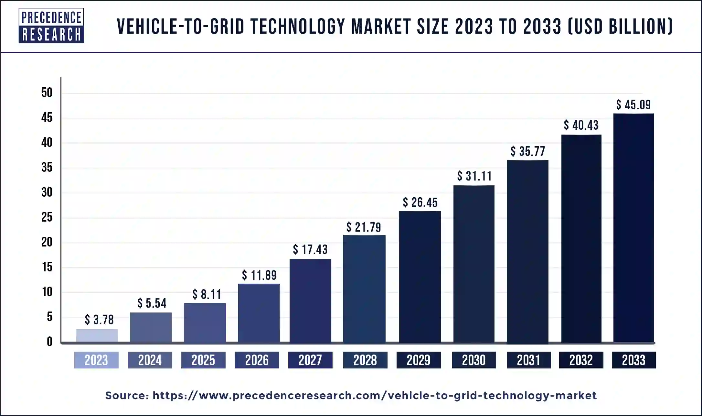

Benefits of V2G
V2G technology offers several benefits, including:
- Grid Stability: Helps balance supply and demand, reducing the need for additional power plants.
- Renewable Integration: Supports the integration of renewable energy sources like wind and solar by storing excess energy.
- Cost Savings: Potentially lower energy costs for EV owners who can sell electricity back to the grid.
- Environmental Impact: Reduces reliance on fossil fuels by optimizing the use of renewable energy.
